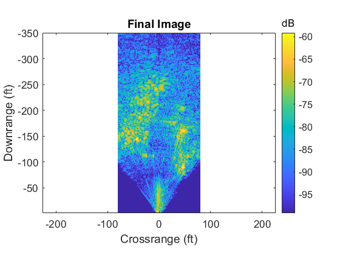

%MIT IAP Radar Course 2011 %Resource: Build a Small Radar System Capable of Sensing Range, Doppler, %and Synthetic Aperture Radar Imaging % %Gregory L. Charvat %SAR algorithm from: %Range Migration Algorithm from ch 10 of Spotlight Synthetic Aperture Radar %Signal Processing Algorithms, Carrara, Goodman, and Majewski %NOTE: set up-ramp sweep from 2-3.2V to stay within ISM band %change fstart and fstop bellow when in ISM band %-------------------------------------------% %Process raw data here clear all; close all; %read the raw data .wave file here [Y,FS] = audioread(['towardswarehouse.wav']); %constants c = 3E8; %(m/s) speed of light %radar parameters Tp = 20E-3; %(s) pulse time Trp = 0.25; %(s) min range profile time duration N = Tp*FS; %# of samples per pulse fstart = 2260E6; %(Hz) LFM start frequency fstop = 2590E6; %(Hz) LFM stop frequency %fstart = 2402E6; %(Hz) LFM start frequency for ISM band %fstop = 2495E6; %(Hz) LFM stop frequency for ISM band BW = fstop-fstart; %(Hz) transmti bandwidth f = linspace(fstart, fstop, N/2); %instantaneous transmit frequency %the input appears to be inverted trig = -1*Y(:,1); s = -1*Y(:,2); clear Y; %parse data here by position (silence between recorded data) rpstart = abs(trig)>mean(abs(trig)); count = 0; Nrp = Trp*FS; %min # samples between range profiles for ii = Nrp+1:size(rpstart,1)-Nrp if rpstart(ii) == 1 & sum(rpstart(ii-Nrp:ii-1)) == 0 count = count + 1; RP(count,:) = s(ii:ii+Nrp-1); RPtrig(count,:) = trig(ii:ii+Nrp-1); end end %parse data by pulse count = 0; thresh = 0.08; clear ii; for jj = 1:size(RP,1) %clear SIF; SIF = zeros(N,1); start = (RPtrig(jj,:)> thresh); count = 0; jj; for ii = 12:(size(start,2)-2*N) [Y I] = max(RPtrig(jj,ii:ii+2*N)); if mean(start(ii-10:ii-2)) == 0 & I == 1 count = count + 1; SIF = RP(jj,ii:ii+N-1)' + SIF; end end %hilbert transform q = ifft(SIF/count); sif(jj,:) = fft(q(size(q,1)/2+1:size(q,1))); end sif(find(isnan(sif))) = 1E-30; %set all Nan values to 0 %SAR data should be ready here clear s; s = sif; save routsidewarehouse2 s; %for image data %-------------------------------------------% %load additional varaibles and setup constants for radar here clear all; c = 3E8; %(m/s) speed of light %load IQ converted data here load routsidewarehouse2 s; %load variable sif %for image data for ii = 1:size(s,1) s(ii,:) = s(ii,:) - mean(s,1); end %sif = s-sif_sub; %perform coherent background subtraction %sif = sif_sub; %image just the background sif = s; %image without background subtraction clear s; clear sif_sub; %*********************************************************************** %radar parameters fc = (2590E6 - 2260E6)/2 + 2260E6; %(Hz) center radar frequency B = (2590E6 - 2260E6); %(hz) bandwidth cr = B/20E-3; %(Hz/sec) chirp rate Tp = 20E-3; %(sec) pulse width %VERY IMPORTANT, change Rs to distance to cal target Rs = 25*.3048; %(m) y coordinate to scene center (down range), make this value equal to distance to cal target %Rs = 0; Xa = 0; %(m) beginning of new aperture length delta_x = 2*(1/12)*0.3048; %(m) 2 inch antenna spacing L = delta_x*(size(sif,1)); %(m) aperture length Xa = linspace(-L/2, L/2, (L/delta_x)); %(m) cross range position of radar on aperture L Za = 0; Ya = Rs; %THIS IS VERY IMPORTANT, SEE GEOMETRY FIGURE 10.6 t = linspace(0, Tp, size(sif,2)); %(s) fast time, CHECK SAMPLE RATE Kr = linspace(((4*pi/c)*(fc - B/2)), ((4*pi/c)*(fc + B/2)), (size(t,2))); %Save background subtracted and callibrated data save sif sif delta_x Rs Kr Xa; %clear all; %run IFP SBAND_RMA_IFP;